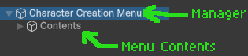
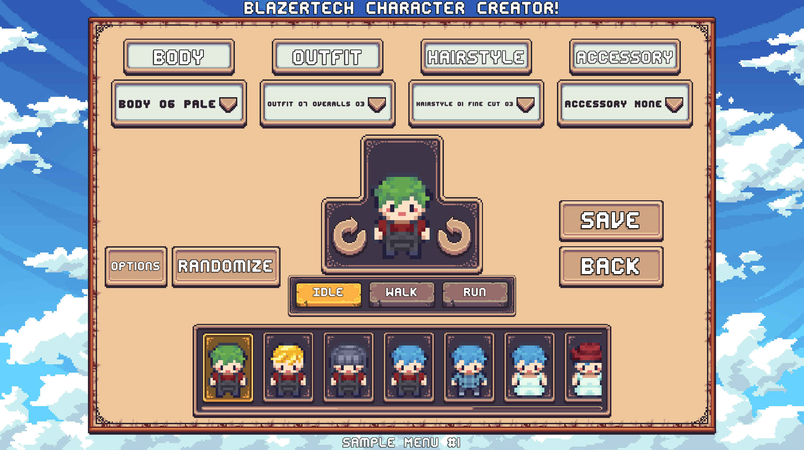
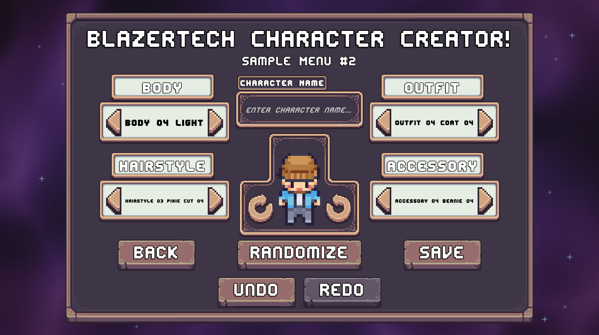
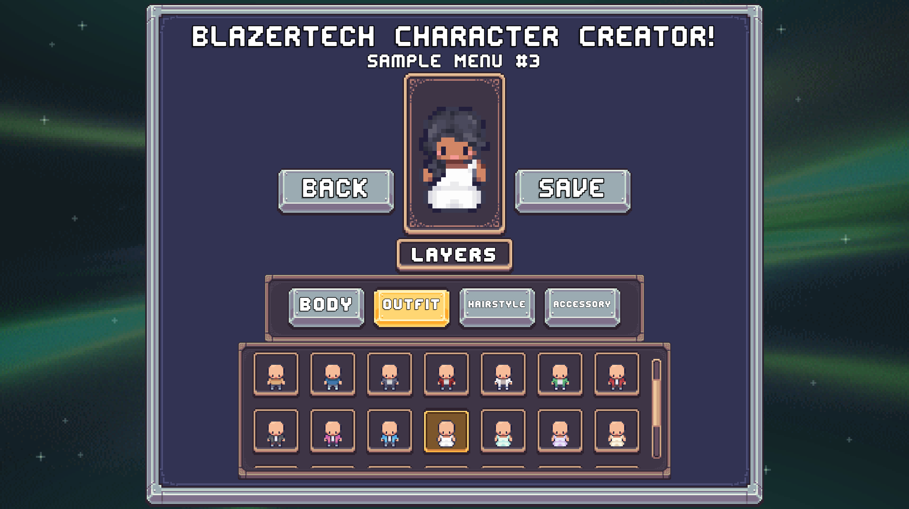
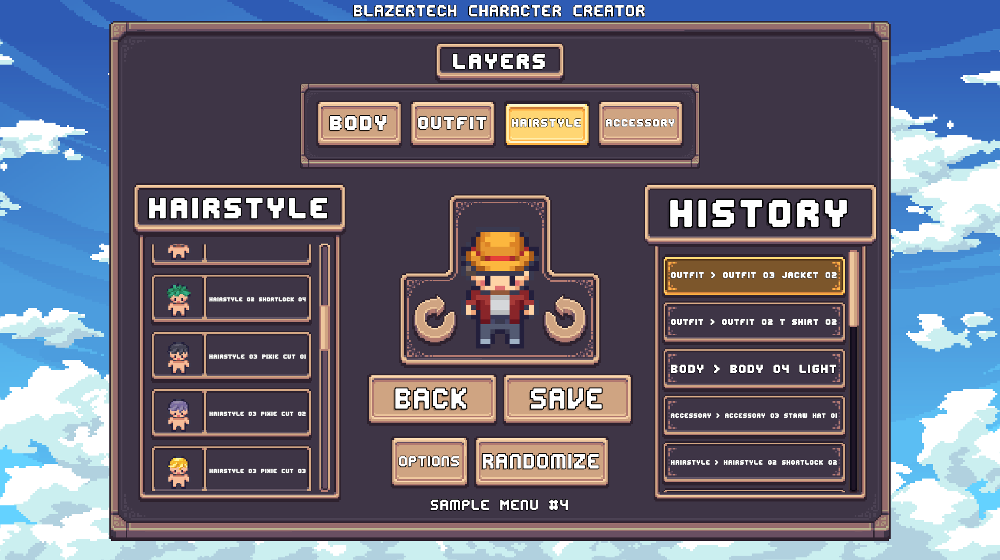

Character Creator Setup
The Character Creator provides a modular system for creating an in-game Character Creation Menu.
This page walks through the different ways to set up a Character Creation Menu, from using a premade menu to building your own.
Choosing a Setup Method
There are two ways to setup a Character Creation Menu:
| Option | Best For |
|---|---|
| Use a Premade Menu | Getting a complete Character Creation Menu working quickly |
| Create Your Own Menu | Building a custom interface using the Character Creator components |
Tip
If you're new to the Character Creator, start with a Premade Character Creation Menu. You can customize or replace individual components later.
The Character Creation Menu Manager
Every Character Creation Menu is managed by a CharacterCreationMenuManager.
The manager controls when the menu is opened and closed and provides the information required to initialize it.
Setting Up the Manager
Create a GameObject for the CharacterCreationMenuManager and keep it enabled at runtime.
The manager requires two fields:
| Field | Description |
|---|---|
| Default Character Type | The LayeredCharacterTypeSO used when the menu is opened. This can be overridden when opening the menu. |
| Menu Contents | The GameObject containing the actual Character Creation Menu. |
A typical menu is structured like this:

The Menu Manager should exist separately from the Menu Contents.
Important
The Menu Manager should remain enabled at runtime. The Menu Contents GameObject can be enabled or disabled.
Opening the Menu
The CharacterCreationMenuManager provides four methods for opening the Character Creation Menu.
Most of these methods use the Character Grouping System to determine which character is being created or edited.
Learn More → Character Grouping System
| Method | Purpose |
|---|---|
| EnableMenu_PrimaryCharacterSlot | Opens the menu using the Primary Character Slot for the specified Character Type. |
| EnableMenu_EditCharacter | Opens the menu to edit an existing Layered Character. |
| EnableMenu_NewPrimaryCharacterSlot | Opens the menu with a new character that overrides the Primary Character Slot. |
| EnableMenu_NewCharacterInFlexibleGroup | Opens the menu with a new character and places it in the specified Flexible Group when saved. |
Menu Events
The CharacterCreationMenuManager provides two Unity Events that can be used to connect the Character Creator to the rest of your game.
On Character Saved
Called when the character in the Character Creation Menu is saved.
The saved character is provided as an event argument.
For example, you can use this event to close the Character Creation Menu by calling CharacterCreationMenuManager.DisableMenu.
On Menu Disabled
Called after the Character Creation Menu has been disabled and closed.
Use this event to open another menu or perform other actions after the Character Creation Menu closes.
Premade Character Creation Menus
Premade Character Creation Menus provide a complete starting point with the components needed for a functional character creator.
At minimum, a premade menu contains:
| Component | Purpose |
|---|---|
| Layer Selectors | Allow the player to change the character's appearance. |
| Character Preview | Shows the character while it is being edited. |
| Loading Screen | Covers the menu while it is being initialized. |
| Save & Back Buttons | Allow the player to save changes or leave without saving. |
Premade Menu Prefabs Location
Premade Character Creation Menus are located at:
Prefabs > Character Creator > Premade Menus
Four premade menus are included.
Premade Character Creation Menu #1
- Dropdown Selectors [Initialize Existing] with four dropdown selectors
- Character Preview with rotation and animation controls
- Controlled Randomization
- Save and Back Controls
- History Panel (Horizontal)
- Loading Screen #1

Premade Character Creation Menu #2
- Carousel Selectors [Initialize Existing] with four carousel selectors
- Character Preview with rotation controls
- Save & Back Controls
- Randomize Entire Character button
- Character Display Name Field
- Undo/Redo Controls
- Loading Screen #2

Premade Character Creation Menu #3
- Tab Selectors [Initialize Existing] with four tab selectors
- Grid Layer Selector
- Character Preview
- Save and Back Controls
- Loading Screen #3
The selected tab determines which layer is displayed by the Grid Layer Selector.

Premade Character Creation Menu #4
- Tab Selectors [Initialize Existing] with four tab selectors
- List Layer Selector
- Character Preview with rotation controls
- Save and Back Controls
- History Panel (Vertical)
- Controlled Randomization
- Loading Screen #4
The selected tab determines which layer is displayed by the List Layer Selector.

Creating Your Own Character Creation Menu
A custom Character Creation Menu consists of two main GameObjects:
Menu Manager
Contains theCharacterCreationMenuManagercomponent and controls the menu.Menu Contents
Contains the actual UI and Character Creator components.
The Menu Contents GameObject is assigned to the Menu Contents field on the CharacterCreationMenuManager.
The two GameObjects should be separate, as shown below:
Important
The Menu Manager should remain enabled at runtime. The Menu Contents GameObject can be enabled or disabled.
Once the manager is set up, the next step is to add the components that make up the menu.
Character Creation Menu Contents
The Character Creator is modular. Each part of the Character Creation Menu is provided as a separate prefab/module.
Most modules can simply be added as children of the Menu Contents GameObject without additional setup.
The following sections separate the modules into Essentials and Optional Features.
Essentials
The following modules provide the basic functionality needed for a usable Character Creation Menu.
1. Layer Selectors
Layer Selectors allow the player to change the selected option for each character layer.
Layer Selector prefabs are located at:
Prefabs > Character Creator > Layer Selectors
Choose the type of selector you want to use, then use a prefab from its /Pre-Setup folder. These prefabs contain a set of already-configured Layer Selectors.
2. Character Preview
The Character Preview displays a live preview of the character while it's being edited.
Character Preview prefabs are located at:
Prefabs > Character Creator > Character Preview
The base folder contains the core Character Preview prefab, which can be added to the menu directly.
Additional functionality can be added using Character Preview addon prefabs.
Learn More → Character Previews
3. Menu Controls
At minimum, the menu should provide:
- Back: Closes the menu without saving.
- Save Character: Saves the character's changes.
These buttons can be created manually or added using the included prefabs.
Creating a Button Manually
To create a button manually:
- Add a Unity
Buttonto the Character Creation Menu. - Add a
CCMRelaycomponent to the button's GameObject. - Add an On Click Event to the button.
- Call one of the following methods:
CCMRelay.DisableMenu()for the Back button.CCMRelay.SaveCharacter()for the Save Character button.
Menu Control prefabs are also available at:
Prefabs > Character Creator > Menu Controls
Additional menu controls can be added as needed.
4. Loading Screen
A Loading Screen covers the Character Creation Menu while it's being initialized.
Loading Screen prefabs are located at:
Prefabs > Character Creator > Loading Screen
There are three ways to use the included loading screen components:
- Loading Screen Core provides a basic black loading screen.
- Loading Screen Components can be added as children of the Loading Screen Core to add additional functionality.
- Complete Loading Screens provide pre-configured loading screens with additional features such as loading bars and text.
Addon components require a reference to the Loading Screen Handler found on the Loading Screen Core.
The folders are organized as follows:
Loading Screen
├── Loading Screen Core
├── Loading Screen Components
└── Complete Loading Screens
Optional Features
Once the essential modules are working, additional features can be added to your Character Creation Menu.
Character Randomization
Character Randomization allows the player to quickly generate a character without manually selecting every layer.
There are several ways to add randomization:
- Randomize Entire Character randomizes all layers.
- Controlled Randomization allows individual layers to be enabled or disabled before randomizing.
- Some Layer Selector variants include a button for randomizing an individual layer.
Randomization prefabs are located at:
Prefabs > Character Creator > Randomization
A simple Randomize Entire Character button can also be created using a Button and CCMRelay, in the same way as other Menu Controls.
Learn More → Character Randomization
Character History
The Character History System records changes made while editing a character.
To enable history tracking, add the CCMHistoryTracker component to a GameObject inside the Character Creation Menu Contents.
History prefabs are located at:
Prefabs > Character Creator > History
The included history prefabs are divided into two categories:
Undo/Redo
The /Undo-Redo folder contains prefabs with buttons that allow the player to undo and redo character changes.
History Panels
The /History Panels folder contains panels that display the character's edit history.
Two panel types are included:
- Vertical History Panel: Displays text describing each change.
- Horizontal History Panel: Displays a character preview for each change.
Selecting an entry in a History Panel reverts the character to that state.
Learn More → History Tracking System
Character Display Name
A Character Display Name Field allows the player to enter a name for their character.
The display name can optionally be displayed near the character later.
The prefab is located at:
Prefabs > Character Creator > Character Display Name Field
Recommended Setup Order
For a first Character Creation Menu, the following order is recommended:
Create the Menu Manager
- Add
CharacterCreationMenuManagerto a GameObject. - Set the Default Character Type.
- Assign the Menu Contents GameObject.
- Add
Add Layer Selectors
- Choose a Layer Selector type.
- Add its Pre-Setup prefab.
Add the Character Preview
- Add the core Character Preview prefab.
Add Menu Controls
- Add Save and Back buttons.
Add a Loading Screen
- Use a Pre-Setup prefab if you want a ready-to-use setup.
Test the menu
- Open the menu using one of the
CharacterCreationMenuManagermethods. - Verify that the character loads and can be edited and saved.
- Open the menu using one of the
Add optional features
- Randomization
- Character History
- Display Name
Related
The following pages cover individual systems of the Character Creator in more detail: